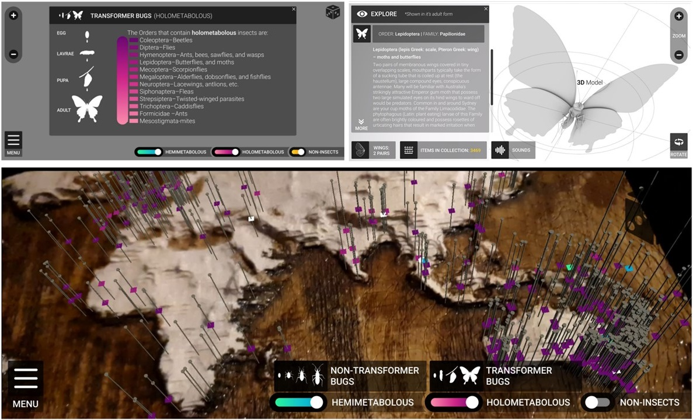
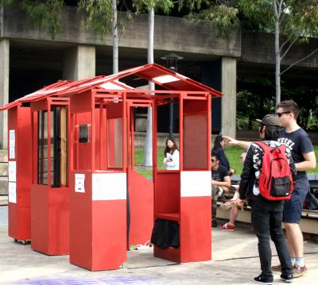
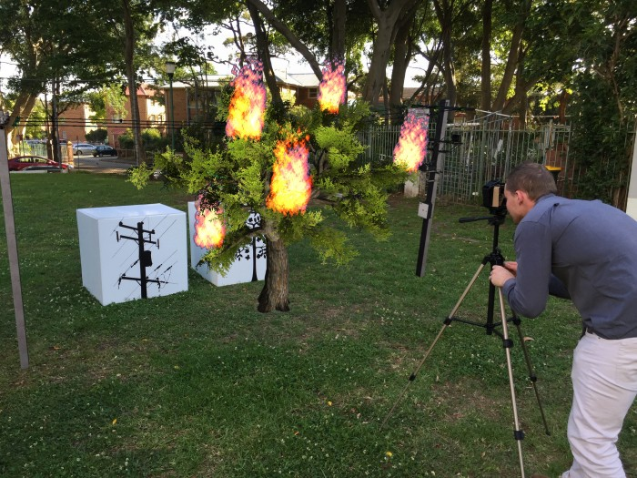
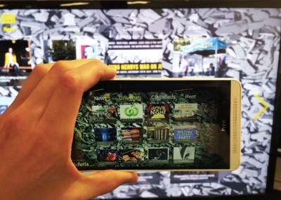
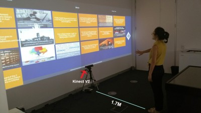
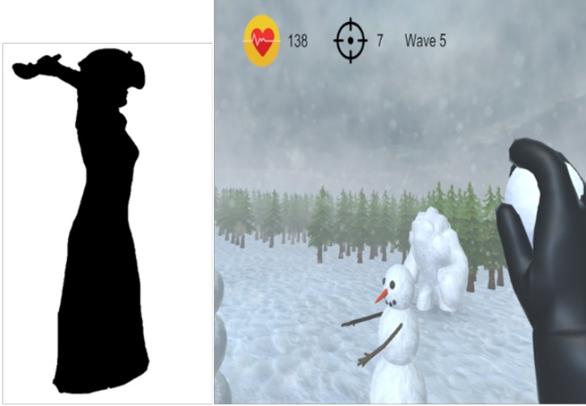

Callum Parker
Lecturer in Interaction Design
Hi, I’m Callum!
I am a HCI researcher and Lecturer in Interaction Design at the University of Sydney’s School of Architecture, Design and Planning where I lead the Urban Interfaces Lab. The overall goal of my research is to build interactive and adaptive technologies that can improve the lives of people and communities within urban spaces, contributing towards smarter cities that work for everyone.
To achieve this goal, I take a human-centred design approach towards designing and developing these systems. This involves evaluating them in a variety of environments, including simulated, lab, and real-world settings, and leveraging cutting-edge technologies such as pervasive displays, XR (augmented, virtual, and mixed realities), and robots to create innovative solutions for urban challenges.
Alongside my research I teach various units across the undergraduate Design Computing and postgraduate Master of Electronic Arts and Interaction Design (MIDEA) degrees. These include Designing for Virtual Reality, XR Design, and Interactive Product Design Studio, which is a capstone project for 3rd-year design students.
Outside of work, I am a passionate aviation geek ✈️, nature enthusiast 🌱, and gamer 🎮.
Projects
Big Data Bugs

Smartphone-augmented reality (AR) application (app) for a local museum exhibit to display visualisations of geo-located data for entomology specimens. Visitors to the museum can spatially visualise insect specimens in-situ and view more detailed information through their own devices.
Pop-spot

We designed and developed an engagement popup to encourage people to stop and vote, provide feedback, and express their opinions about transport infrastructure on and around our University through a collection of interactive modules, including a touchscreen transit information screen, a selfie voting app (vote with the transport option you took to university), a chalkboard, and a chalk drawing robot (tallying the votes from live tweets to our popup's Twitter hashtag).
AR Tree Trimming Awareness Game

This game was a component for a community engagement popup for Ausgrid (a local power company) to raise awareness about tree trimming. I created a video see-through augmented reality (AR) headset mounted on a tripod, which people could look through to see AR content. The white boxes as shown in the photo are AR markers, one for the 3D tree and the other for the 3D powerlines. If they are too close together then the tree catches fire.
AR Assisted Personalisation

Users could engage with the content directly on-screen or through a custom developed smartphone augmented reality (AR) app. The app had two distinct features, overlay and remote control. The overlay allowed users to see personalised content overlaid on the display, based on a user profile containing user preferences stored in the app. The remote control feature enabled users to control the display by performing swipe gestures on the display through their smartphone's camera feed.
Tweet Wall

We designed and implemented a public display application that allows people to navigate between Twitter feeds and to find details about particular tweets. The application supports selection and navigation through point-and-dwell and push and grab-and-pull. A within-subject evaluation with 10 participants found that although point-and-dwell was perceived to be more accurate, push was preferred for selecting items and grab-and-pull was preferred for navigation.
Personalised VR exertion games

Virtual reality games, even though they were not explicitly designed for exercise, have the potential to provide enough exercise to achieve recommended levels of activity for a day while keeping people motivated. However, there is a risk of overexertion. Therefore, we designed and developed a virtual reality exergame called Snowballz, which utilises a user model and dynamic difficulty adjustment to deliver an ever changing level intensity according to the player’s energy and performance.
Molypoly

MolyPoly is a 3D molecule construction simulation to help students grasp the concepts of chemistry easily through immersion and natural interaction with 3D molecules. It was designed to augment the teaching of organic chemistry with enhanced natural interaction and 3D visualisation techniques. The results from a user study with first year chemistry students demonstrated that students can achieve similar learning outcomes to those who study chemistry traditionally at the end of the four class sessions.
Skills
- XR (AR, VR, MR) Design and Development
- Mixed Methods Research
- Interaction Design
- Design Thinking
- Lab & Field Studies
- Prototyping
- Human Computer Interaction
- Unity Game Engine